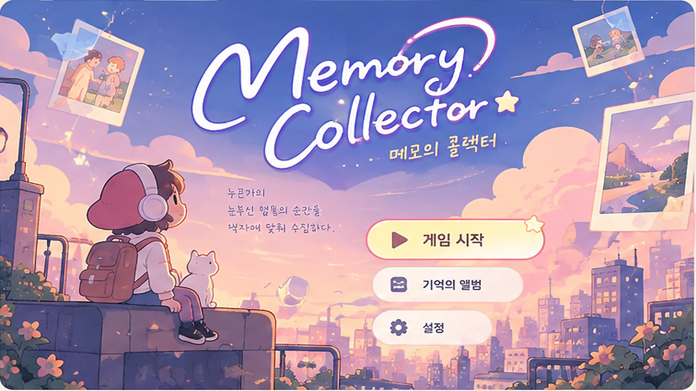
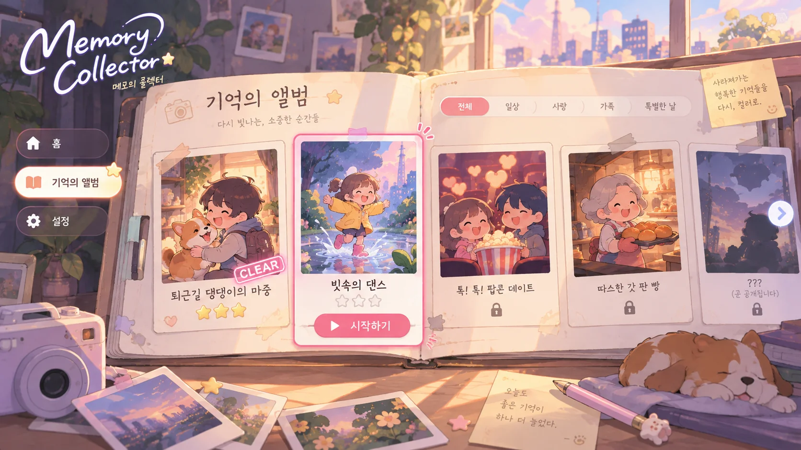

MEMORY COLLECTOR · WEB DEMO
잊고 있던 행복에,
다시 색을 입히다✳
누군가의 소중한 순간을 리듬에 맞춰 되살리는 작은 여행. 단 하나의 버튼으로 흑백의 기억을 컬러로 물들여 보세요.
◉ 1버튼 리듬 액션♡ 따뜻한 일상 이야기✦ 설치 없는 웹 플레이
어떤 기억을
되찾을까요? ♡
오늘의 작은 행복을
기억해 주세요.
되찾을까요? ♡

A LITTLE MOMENT OF JOY기억해 주세요.
THE STORY평범해서 더 소중한,
평범해서 더 소중한,
우리의 작은 순간들
기억은 희미해져도, 그날의 설렘은 사라지지 않으니까.

Our precious memories, forever.Dear, memory keeper ♡
당신은
메모리 콜렉터입니다.
흑백으로 멈춘 누군가의 행복한 기억. 음악의 박자에 맞춰 작은 행동을 완성할 때마다 장면에 색과 생기가 돌아옵니다.
친구와의 웃음, 따뜻한 빵 냄새, 반려견의 마중처럼 마음에 남은 순간을 하나씩 수집해 나가세요.
간단한 조작터치하거나 스페이스바 하나면 충분해요
색을 되찾는 순간리듬에 맞출수록 기억이 선명해져요
나만의 기억 앨범복원한 장면을 소중하게 간직해요
THE MEMORY ALBUM
어떤 기억을 만나볼까요?
서로 다른 하루, 서로 다른 행복.
마음에 드는 기억부터 플레이해 보세요.
✳ 이번 웹 체험판은 3가지 기억을 간단한 리듬 플레이로 체험할 수 있어요.
HOW TO PLAY단 하나의 버튼으로
단 하나의 버튼으로
기억을 되찾는 방법
복잡한 조작은 필요 없어요. 음악을 듣고, 화면을 보고, 타이밍에 맞춰 톡!
01
♫ ♪ · ♪
박자를 느껴요
리듬과 화면 중앙에 모이는 원을 보고 타이밍을 준비하세요.
02
SPACE또는 탭!
딱 맞춰 눌러요
PC에서는 스페이스바, 모바일에서는 화면 터치로 플레이해요.
03
PERFECT! ✦
기억을 물들여요
Perfect · Good · Miss 판정을 받고, 성공할수록 컬러가 돌아와요.
PLAYABLE WEB DEMO
이제, 직접 기억을 깨워볼까요?
별도 설치 없이 이 페이지에서 바로 플레이할 수 있어요.
MEMORY 02빗속의 댄스
COMBO0
✧ 현재 체험판은 게임의 핵심 조작과 기억 복원 연출을 검증하기 위한 초기 웹 프로토타입입니다.